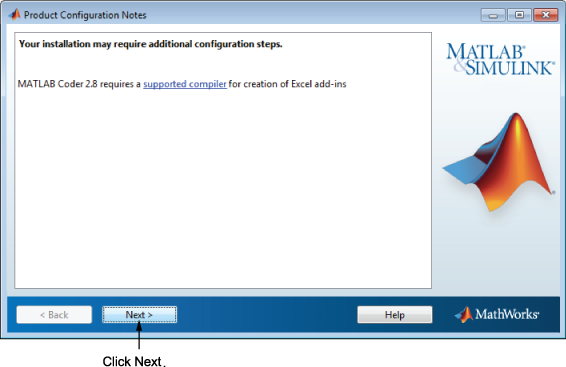

설치하는 제품에 따라, 인스톨러가 다음과 같은 추가 정보가 들어 있는 대화 상자를 표시할 수 있습니다.
제품 구성 정보 — 일부 제품에는 추가적인 구성이 필요합니다. 추가적인 구성이 필요한 제품을 설치한 경우 이 대화 상자에 구성 명령이 표시됩니다.
지원되는 컴파일러 및 SDK — 일부 제품에는 지원되는 컴파일러 또는 소프트웨어 개발 키트가 필요합니다. 이 요구 사항이 있는 제품을 설치한 경우 인스톨러가 자세한 내용을 볼 수 있는 링크를 표시합니다.
다음을 클릭하여 설치를 진행합니다.
